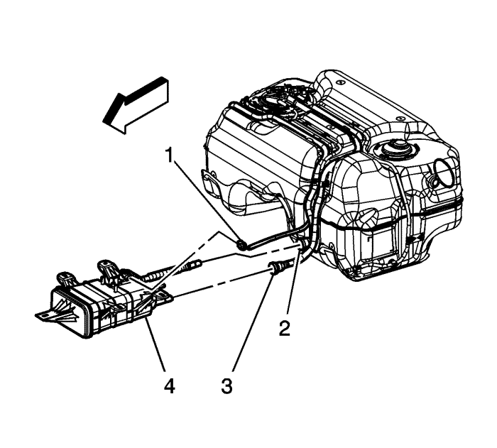
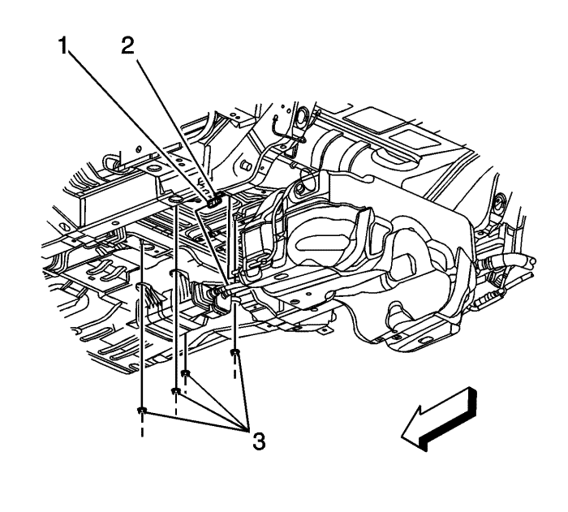

Sustitución del depósito de emisión de vapor
Procedimiento de desmontaje

Nota: el depósito de emisiones EVAP está ubicado debajo de la parte central del vehículo. Tiene 3 conexiones de línea EVAP:| • | La tubería de aire fresco de EVAP |
- Elevar el vehículo y soportarlo de manera segura. Consultar Elevación del vehículo con un gato .
Atención: Limpie todas las conexiones de los tubos de combustible y las zonas de alrededor antes de desacoplar los tubos de combustible para que no entre suciedad en el sistema de combustible.
- Desconecte el tubo flexible/tubo de aire fresco del depósito EVAP del tubo flexible/tubo de aire fresco del depósito de combustible (2). Consultar Reparación del cierre rápido con collar de plástico .
- Desconecte el tubo flexible/tubo de ventilación del depósito EVAP del depósito EVAP. Consultar Reparación del cierre rápido con collar de plástico .

- Desconecte el tubo flexible/tubo (1) de purga del depósito EVAP del depósito EVAP.
- Extraiga las tuercas (3) que unen el depósito EVAP a la carrocería.
- Baje el depósito EVAP.
- Desenchufe el conector eléctrico (1) del solenoide de ventilación EVAP.
- Desmonte el depósito EVAP (4) del vehículo.
Procedimiento de montaje
- Enchufe el conector eléctrico (1) del solenoide de ventilación EVAP.
- Monte el depósito EVAP (4) a los bajos del vehículo.
Precaución: Consulte Precaución con las fijaciones en la sección Prólogo
- Coloque las tuercas (3) que unen el depósito EVAP a la carrocería.
Apretar
Apriete las tuercas a 9 N·m (80 lb. pulg.).
- Conecte el tubo flexible/tubo (1) de purga del depósito EVAP al depósito EVAP.
- Conecte el tubo flexible/tubo (3) de ventilación del depósito EVAP al depósito EVAP. Consultar Reparación del cierre rápido con collar de plástico .
- Conecte el tubo flexible/tubo de aire fresco del depósito EVAP al tubo flexible/tubo de aire fresco del depósito de combustible (2). Consultar Reparación del cierre rápido con collar de plástico .
- Bajar el vehículo.
| © Copyright Chevrolet Europe. All rights reserved |